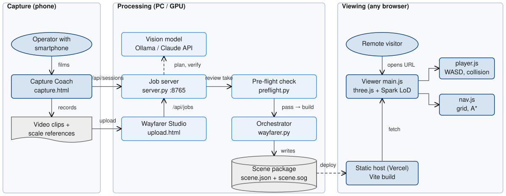
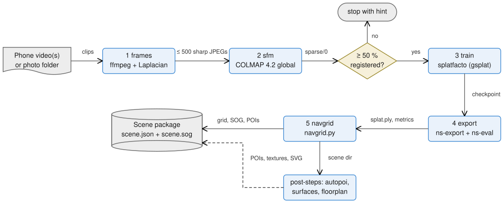
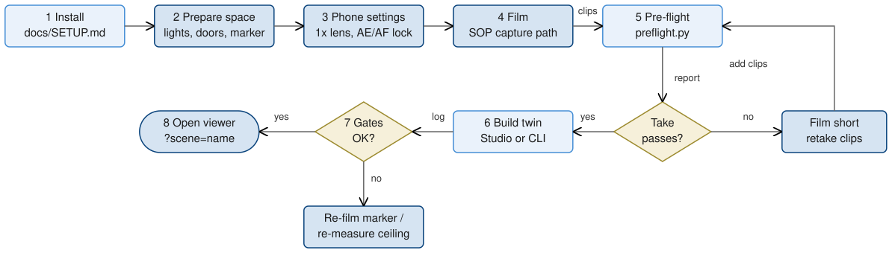
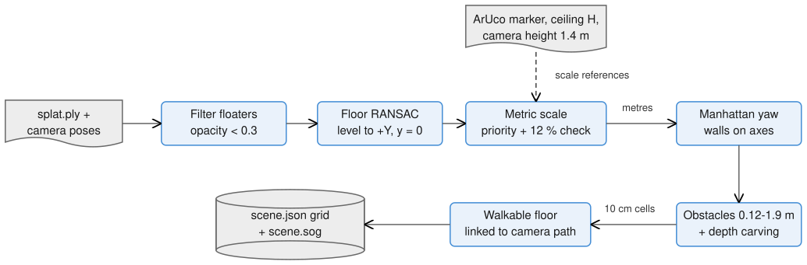

Technical Abstract · Namma Space, Techfest 2026-27, IIT Bombay · Round 1: 3D Reconstruction & Roaming
Team Simpletons (ID TM-A30B5FE384F) · Ayush Jadaun (lead), Abhay Agarwal, Arnav Raj, Akshay Yadav
Repository: https://github.com/ayush-jadaun/Wayfarer · Live viewer: https://wayfarer-ten-kappa.vercel.app/
Demo video: https://drive.google.com/file/d/1haPZGPQqfS8M_v1reZNNYYvk4NMd-9Gs/view
Overview. Wayfarer replaces static 2D floor plans with a photorealistic 3D twin that anyone can walk through in a web browser. One command turns an ordinary smartphone walkthrough into a 3D Gaussian-splat model and a metric occupancy grid. The grid gives the model a level floor, real-world scale and a map of where a person can walk. A zero-install viewer streams the compressed model and supports first-person WASD + mouse roaming with collision against real walls and furniture. Round 1 covers the capture procedure, the reconstruction and free roaming. The same grid already drives point-of-interest (POI) search and obstacle-aware A* routing, which are needed for Round 2.
The system has three tiers, one per actor (Fig. 1). Capture runs on the operator's phone. The Capture Coach page (web/) guides recording live and uploads clips. Processing runs on one PC. A standard-library HTTP job server (pipeline/, port 8765, proxied at / by web/) accepts uploads from the Wayfarer Studio page (web/) or Coach sessions. It sends survey and verification photos to a vision model (pipeline/: local Ollama with Qwen2.5-VL by default, or the Claude API) and runs the fast capture check (pipeline/). It then starts the orchestrator (pipeline/). Splat training needs a CUDA GPU; our team trains on a local GPU or a Kaggle T4 (pipeline/, kaggle_). Viewing is a static Vite build of web/, deployed on Vercel. main. loads the scene and renders it with three.js and Spark; player. handles movement and collision, nav. the grid and routing, minimap. the top-down map.

The only contract between processing and viewing is the scene package in web/. scene. holds the grid as plain-text rows (. walkable, # wall, o furniture), cell size and origin, floor and eye height, the spawn point, the splat transform and the POIs. scene. is the compressed splat. Because the grid is text, a wall the scan missed can be fixed in an editor. Every pipeline step writes its output to disk and is skipped when that output exists, so an interrupted build resumes (--force <step> re-runs from a step). The pipeline also accepts photo folders, several overlapping room clips, or a finished RGB-D scan (pipeline/), which skips camera-pose recovery and training.
Fig. 2 shows the five resumable steps of wayfarer. and the files passed between them.
--quality high). In each window the sharpest frame by variance of the Laplacian is kept, up to 500 frames.splatfacto (gsplat kernels) trains for 7k/30k/40k/50k iterations depending on --quality, resuming from the last checkpoint.ns-export writes splat.ply . ns-eval scores held-out frames (PSNR/SSIM/LPIPS) into stats.json , which ships inside scene.json .navgrid.py levels, scales and aligns the splat, builds the occupancy grid and compresses the splat to SOG (Section 4.3).Post-steps label objects (autopoi.), texture the floor and ceiling (surfaces.) and draw a vector floor plan (floorplan.). Optional flags mask out people (--mask-people, masks.) and repair unseen views with a diffusion model (--ai-repair, airepair.).

The capture rules are in docs/. The numbers the automatic checks use are in pipeline/. Fig. 3 shows the procedure end to end.
docs/SETUP.md ): Python 3.10 environment with PyTorch 2.1.2, nerfstudio 1.1.5 and the prebuilt gsplat 1.4.0 wheel; COLMAP 4.2+, FFmpeg and Node.js 20 on PATH; npm install in web/. Optionally install Ollama and run ollama pull qwen2.5vl:7b for the AI coach.docs/marker.svg at 100 % (150 mm square), stick it flat within about 2 m of the path, and tape-measure one floor-to-ceiling height.python pipeline/preflight.py walk.mp4 , flags blur, fast turns, dark or blank-wall stretches and exposure jumps with timestamps. It also runs COLMAP on 120 frames (≥ 90 % must register in one model) and checks view angles (median ray spread ≥ 15°). Failures come back as short retake clips to film.start.bat , drop the clips into Wayfarer Studio and press Build twin, or run python pipeline/wayfarer.py walk.mp4 --name home --ceiling 2.75 .npm run dev and open ?scene=<name>, or npm run build and deploy web/dist . Visitors roam with WASD + mouse, Shift to run, F to fly, M for the map and / to search.
Sharpness is the variance of the Laplacian on a 480 px greyscale thumbnail. A window's best frame is rejected only if it falls below 0.55× the sharpest frame within ±2 s, not below a global median. A plain wall is naturally low-contrast yet sharp, whereas motion blur is low relative to its neighbours. Photo folders keep every photo.
Driving COLMAP directly, instead of through nerfstudio's wrapper, keeps loop detection on and lets us pick the largest model. On a home capture, the code records global mapping registering 284 of 292 frames in one model at 0.67 px in 6.5 min; incremental mapping split the same frames into two models in 17 min (wayfarer.). Stray cameras farther than 10× the median distance are deleted, because they would squash the real poses during training. Training uses settings that fit an 8 GB GPU: images cached on the CPU as uint8, a per-image bilateral grid that absorbs exposure and white-balance shifts, scale regularisation against needle-shaped splats, and SO3×R3 pose refinement. A memory-capped gsplat MCMC trainer (train_) is the fallback for very large venues.
A trained splat has no floor, no scale and no notion of what is solid; Fig. 4 shows how navgrid. adds them.
depthcarve.py ) clears cells that rendered camera rays pass through, and blobs under 0.03 m² are discarded.scene.json .
Spark builds a level-of-detail tree in a worker, so each frame renders a bounded number of splats on any GPU. Splats are cut off at √5 standard deviations, and the full-detail foveation cone is widened to 130° so screen edges stay sharp (main.). The walker is a 0.22 m circle, eye height 1.6 m, with exponential acceleration. Collision is resolved per axis against the grid, so the walker slides along walls (player.); phones get a touch stick and drag-to-look. Routing (nav.) uses 8-connected A* with an octile heuristic and no corner cutting, on a grid inflated by 0.3 m with a raw-grid fallback for tight doors, followed by line-of-sight smoothing. Search ranks exact, prefix, word-prefix, substring, description and subsequence matches (main.).
The live demo is the "fast apartment" twin built with import_ from the public Redwood indoor apartment scan: a mesh, a metric trajectory, 31,919 RGB-D frames and a LIDAR scan registered automatically. It has 3,276,779 splats. SOG compression shrinks the splat from 183.5 MB (PLY) to 22.3 MB (8.2×). The grid is 98 × 79 cells at 0.1 m with 38.4 m² walkable, and 18 POIs (4 rooms, 14 objects) were labelled automatically by autopoi.. This twin is not a trained splat, so it has no held-out PSNR/SSIM. Automated tests cover the viewer (web/: 6 navigation and 8 capture-metric tests). Python self-checks cover the grid builder on a synthetic tilted, rotated and scaled room (scale within 3 %, door walkable, table footprint), marker scale, the pre-flight check and the coach with its models stubbed.
All third-party software, models, services and data used by Wayfarer and by this abstract (licence in parentheses; from the upstream projects where the repository does not state it):
node --testnvidia/difix_ref (NVIDIA research licence): optional view repairanthropic SDK (MIT): optional coach providerkaggle CLI (Apache-2.0): cloud training